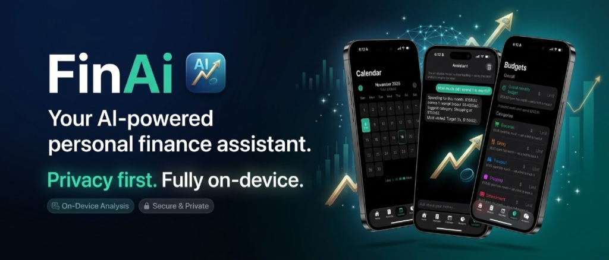

Your AI-powered personal finance assistant.
Privacy first. Fully on-device.

Your most private financial assistant. FinAi scans your receipts on-device, organizing your spending without ever leaving your iPhone.
FinAi is the ultimate personal finance manager designed for security and simplicity. By leveraging the power of on-device intelligence, FinAi turns your iPhone into a secure financial command center — automatically scanning your receipt photos to organize your spending, all without a cloud connection or external account.
Your financial data is personal and should remain that way. FinAi performs all scanning, data extraction, and organization directly on your iPhone. No receipt data is ever uploaded to a server, sold to third parties, or stored in the cloud.
Simply take photos of your receipts. Our advanced on-device scanner extracts key details like merchant, date, and total amount, automatically categorizing them into groups like Groceries, Dining, Transport, and Shopping.
Set monthly budgets for different categories and track your progress with intuitive visual reports. Understand where your money is going and make informed decisions to improve your financial health, all powered by the secure data on your device.
Manage your money confidently, knowing your financial data is safe on your device with FinAi.